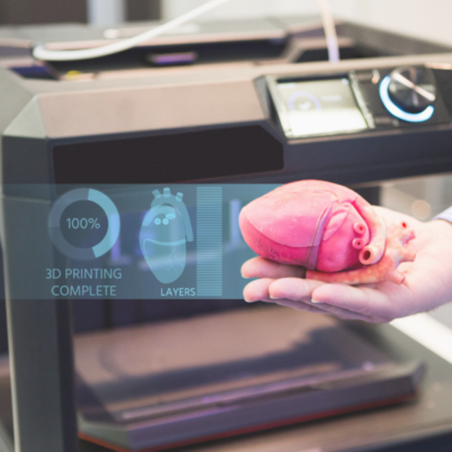

La bioimpresión 3D es una tecnología que permite crear prótesis, medicamentos y réplicas prequirúrgicas. A través de la bioimpresión se usan capas de biotintas o materiales biológicos, bioquímicos y células vivas para crear estructuras que puedan restaurar la función de un tejido. La tecnología de bioimpresión 3D utiliza células de los pacientes para imprimir tejidos u órganos según sus necesidades. La innovación científica acerca a pasos agigantados la tecnología de células modificadas y bioimpresión 3D como el futuro de los trasplantes de órganos
La bioimpresión 3D funciona según el principio de los depósitos de capas. La gran mayoría de las bioimpresoras 3D funcionan según el mismo principio: depositan el material capa a capa, normalmente con una jeringa. La biotinta se extruye a través de una boquilla y se deposita en capas finas, que luego se fusionan para crear la estructura 3D. Las piezas biomédicas impresas suelen pretender imitar las características de los tejidos naturales.

Alternativas
Una alternativa para suplir la escasez de órganos.
Diverdidad
Usos en sectores como la agricultura.
Compatibilidad
Personalización de los órganos con propias células.